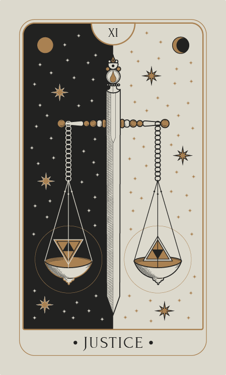
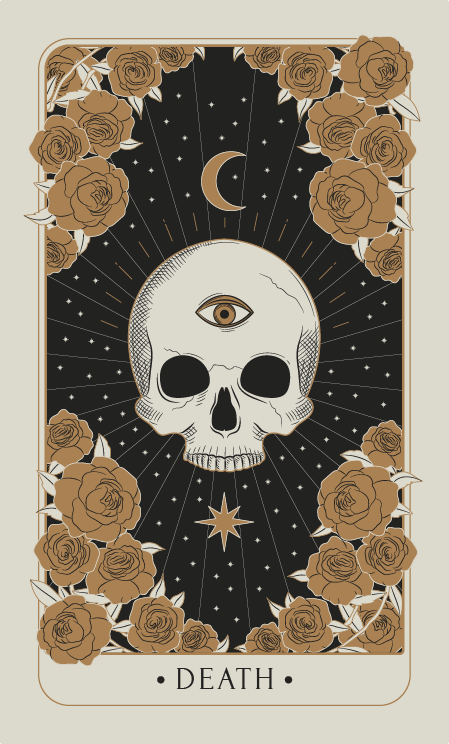
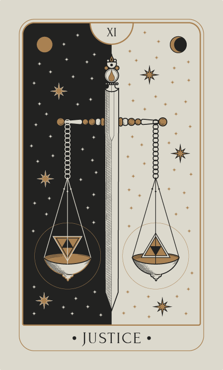
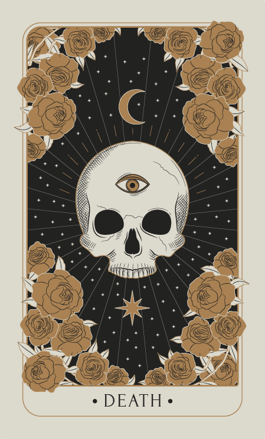
 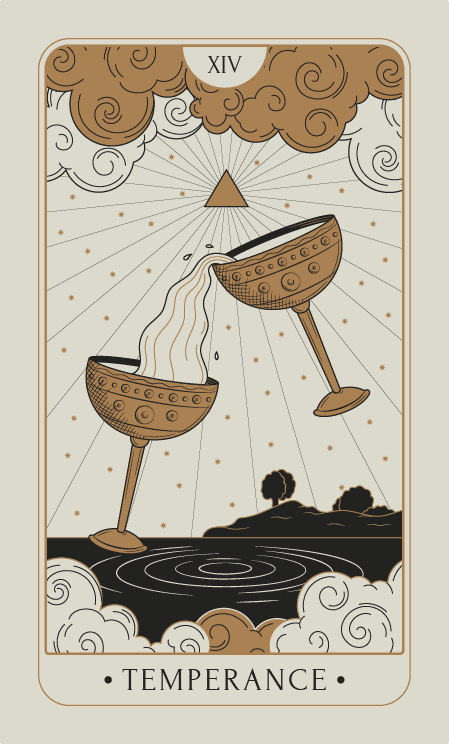
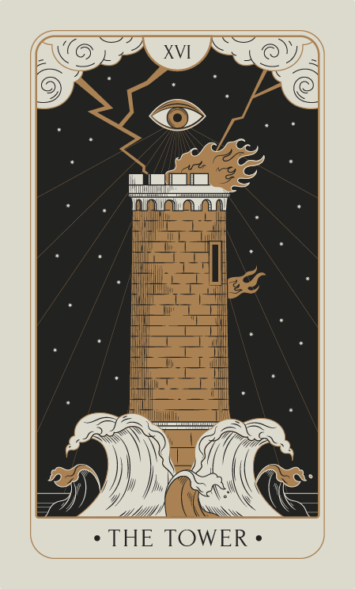
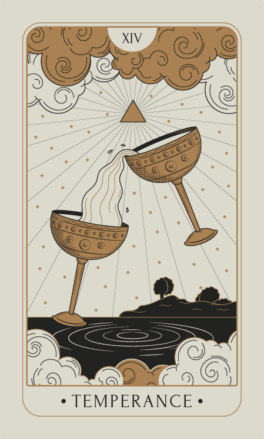
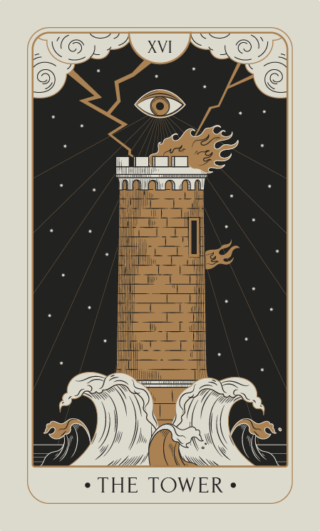
Nada se revela
sin intención.
Una lectura para comprender lo que hoy te inquieta.
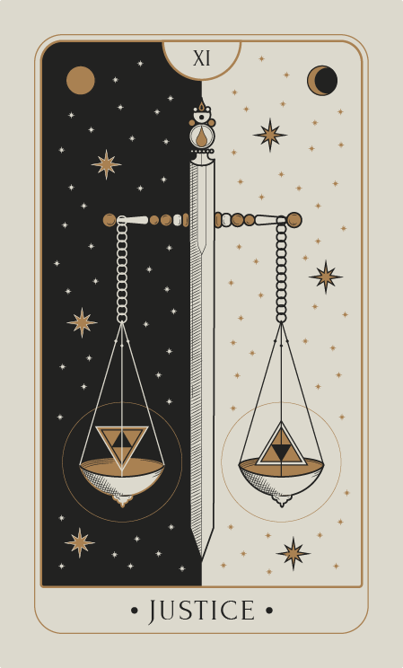
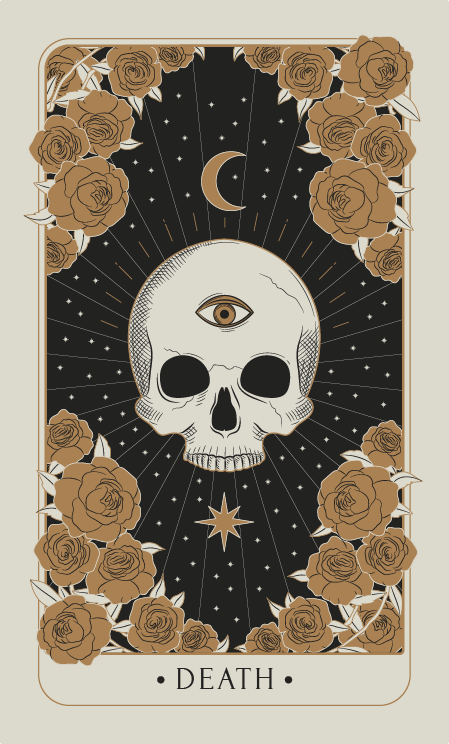
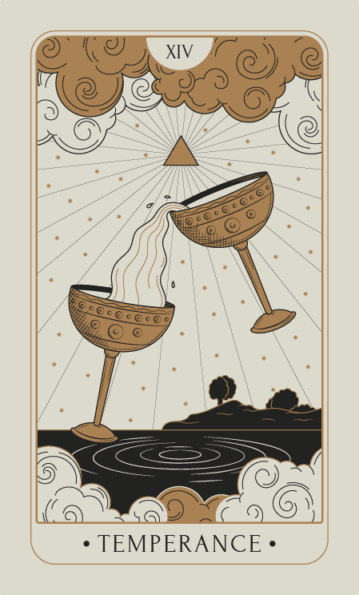
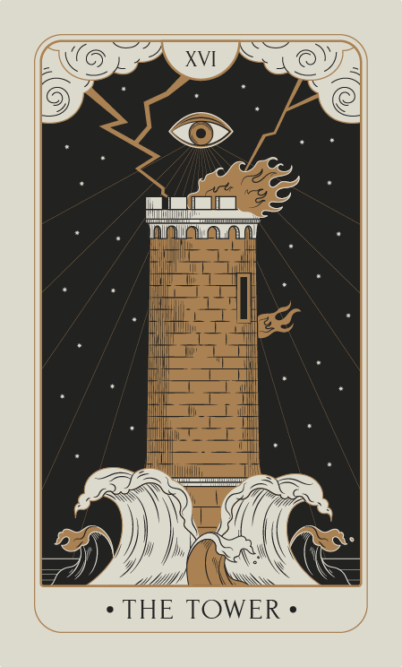
Una lectura para comprender lo que hoy te inquieta.
Nacida en el otoño de 1956, Ana María lleva en su esencia la fuerza de sus raíces italianas. Al igual que la historia de tantas familias que llegaron a Argentina, su vida se construyó sobre el amor, el trabajo y el calor de un hogar donde crió a sus dos hijos.
Hace más de 30 años, el Tarot llegó a su vida de forma silenciosa. Lo que comenzó como un refugio personal y un gesto de guía para sus amigas más íntimas, se transformó con el tiempo en una búsqueda incansable de conocimiento.
Tras devorar cientos de libros y completar decenas de formaciones, Ana María decidió que su don ya no podía quedar en la intimidad.
Hoy, con la sabiduría que dan los años y el estudio, se abre al mundo para canalizar mensajes y ofrecer claridad a quienes, como ella alguna vez, buscan comprender lo que el destino tiene para decir.
Un encuentro profundo para explorar tu presente y las energías que te rodean.
Encuentros compartidos de hasta 3 personas o grupos expandidos.
Un estudio profundo de tu vibración natal y el significado de tus números.
No dudes en consultar por otras lecturas o servicios personalizados.
✦ Todas las sesiones se realizan vía videollamada. Consultas presenciales sujetas a disponibilidad limitada.
Si sientes el llamado a descubrir lo que las cartas tienen para revelarte, puedes contactarme directamente para coordinar tu sesión.
Atención personalizada de lunes a sábados
Brindamos luz a consultantes en Argentina, España y países de habla hispana.
Consultar disponibilidad de horarios según tu zona horaria.